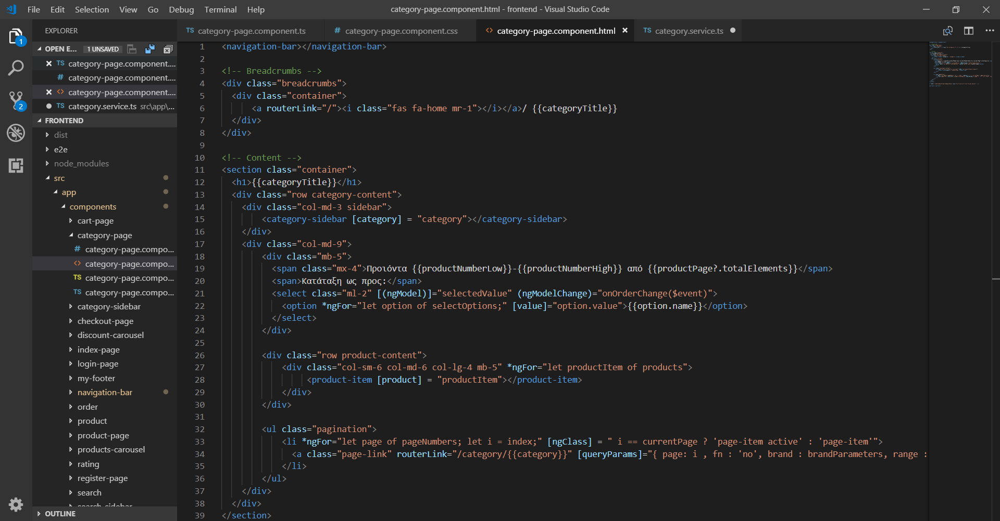

Angular - category-sidebar
Θα δημιουργήσουμε το category-sidebar component, το οποίο περιέχει δύο φίλτρα για τα προϊόντα. Ο χρήστης θα μπορεί, να αναζητήσει προϊόντα συγκεκριμένων εταιριών ή/και μέσα σε ένα συγκεκριμένο διάστημα τιμών(10-20ευρώ).
Εταιρίες
Για την αρχικοποίηση των τιμών των φίλτρων, ο client θα ζητάει τον αριθμό των προϊόντων της κάθε εταιρίας, σε μια κατηγορία. Αν επιλεχθεί κάποιο φίλτρο από τα διαστήματα τιμών μετά, τότε στέλνει μια παράμετρο range, για να πάρει τον αριθμό των προϊόντων της κάθε εταιρίας, σε ένα διάστημα τιμών.
- αρχικό αίτημα, για την εταιρία Solgar : HTTP GET http://localhost:8080/api/categories/vitamins/brands/Solgar/products/count
- αριθμός προϊόντων εταιρίας Solgar, στα διαστήματα 0 - 9.99, 10 - 19.99 : HTTP GET http://localhost:8080/api/categories/vitamins/brands/Solgar/products/count?range=1&range=2
Διαστήματα τιμών
Για την αρχικοποίηση των τιμών των φίλτρων, ο client θα ζητάει τον αριθμό των προϊόντων ανά διάστημα τιμών. Αν επιλεχθεί κάποιο φίλτρο από τις εταιρίες μετά, τότε στέλνει μια παράμετρο brand, για να πάρει τον αριθμό των προϊόντων στο συγκεκριμένο διάστημα τιμών, που ανήκουν σε αυτές τις εταιρίες.
- αρχικό αίτημα, για το διάστημα 0 - 9.99 : HTTP GET http://localhost:8080/api/categories/ranges/1/products/count
- αριθμός προϊόντων εταιρίων Solgar και Solaray, στο διαστήμα 0 - 9.99 : HTTP GET http://localhost:8080/api/categories/vitamins/ranges/1/products/count?brand=Solgar&brand=Solaray
Spring Boot
Αρχικά θα χρειαστούμε μια μέθοδο, η οποία θα επιστρέφει τις εταιρίες των προϊόντων μιας κατηγορίας.
Προσθέτουμε την ακόλουθη μέθοδο στο ProductRepository. Θα επιστρέφει τη λίστα των εταιριών, πραγματοποιώντας το ερώτημα JPQL "select DISTINCT prod.brand from Product prod where prod.category.id = :id".
package springeshop.repositories;
@Repository
public interface ProductRepository extends JpaRepository<Product, Integer> {
....
@Query("select DISTINCT prod.brand from Product prod where prod.category.id = :id")
List<Brand> findCategoryBrands(@Param("id") int id);
}
Προσθέτουμε την μέθοδο στο ProductService και ProductServiceImpl.
package springeshop.service;
public interface ProductService{
...
List<Brand> findCategoryBrands(@Param("id") int id);
}
package springeshop.service;
@Service("productService")
@Transactional
public class ProductServiceImpl implements ProductService{
...
@Override
public List<Brand> findCategoryBrands(@Param("id") int id){
return productRepository.findCategoryBrands(id);
}
}
Δημιουργούμε έναν BrandApiController στο springeshop.controller
package springeshop.controller;
@RestController
@RequestMapping("/api")
public class BrandApiController{
public static final Logger logger = LoggerFactory.getLogger(BrandApiController.class);
@Autowired
private ProductService productService;
@Autowired
private CategoryService categoryService;
...
Προσθέτουμε τη μέθοδο getCategoryBrands στον BrandApiController. Εάν δεν υπάρχει κατηγορία με αυτό το όνομα, επιστρέφουμε status 404 NOT FOUND.
@RequestMapping(value = "/brands", method = RequestMethod.GET)
public ResponseEntity<?> getCategoryBrands(@RequestParam((@value = "category") String category{
Category requestedCategory = categoryService.findByName(getCorrectCategoryName(category));
if(requestedCategory == null){
logger.error("Category with name {} not found.", name);
return new ResponseEntity<>(new ErrorMessage("Category with name " + name + " not found"), HttpStatus.NOT_FOUND);
}
Εάν η λίστα τον εταιριών είναι κενή, επιστρέφουμε status 204 NO CONTENT, αλλιώς τις ταξινομούμε σε αύξουσα αλφαβητική σειρά και επιστρέφουμε την λίστα με status 200.
List<Brand> brands = productService.findCategoryBrands(requestedCategory.getId());
if(brands.isEmpty())){
return new ResponseEntity<>(HttpStatus.NO_CONTENT);
}
brands.sort((Brand brand1, Brand brand2) -> brand1.getName().compareTo(brand2.getName()));
return new ResponseEntity<List<Brand>>(brands, HttpStatus.OK);
Παράδειγμα αιτήματος με Postman
category-page component
Δημιουργούμε το component category-page και το τοποθετούμε στο φάκελο components. Το όνομα της κατηγορίας το παιρνάμε χρησιμοποιώντας ένα routerLink, το οποίο λέει στην Angular, να αλλάξει route.
<a class="nav-link" routerLink="/category/{{category.englishName}}">{{category.greekName}}</p></a>
ng generate component category-page
Θα χρησιμοποιήσουμε τη μέθοδο getCategoryProductsPage() του ProductService, για να πραγματοποιήσουμε το HTTP αίτημα και να πάρουμε το προϊόντα.

Κάθε φορά που αλλάζει ο χρήστης κατηγορία, παίρνουμε το όνομα της κατηγορίας από το route και πραγματοποιούμε το HTTP αίτημα, για να πάρουμε τα προϊόντα.
category-page.component.ts

category-page.component.html
Εισάγουμε τα template <navigation-bar> και μετά εμφανίζουμε τον τίτλο της κατηγορίας. Μετά, στην αριστερή στήλη τοθετούμε το template <category-sidebar> του CategorySidebarComponent, το οποίο θα δημιουργήσουμε μετά και στην δεξιά <product-item> templates, για να εμφανίσουμε τα προϊόντα. Τέλος, εισάγουμε τα template <my-footer>
category-page.component.css